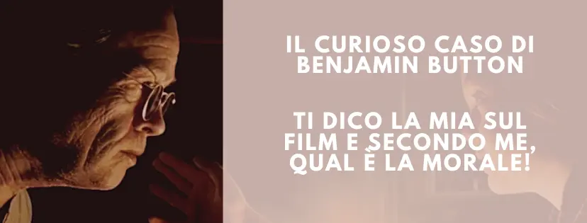
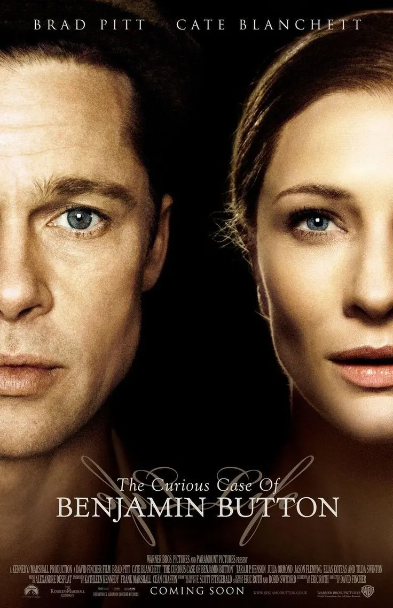
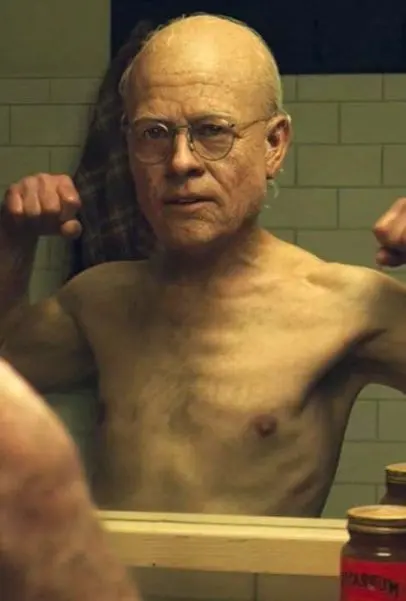

Il curioso caso di Benjamin Button e la mia opinione

Ieri ho visto, per l'ennesima volta, il film "Il Curioso Caso di Benjamin Button" e devo ammettere che, anche questa volta, è stata un'esperienza che mi ha fatto riflettere profondamente sulla natura della vita e sui suoi misteri.

Il protagonista di questa storia, Benjamin Button, è un uomo che nasce vecchio e inizia a rigenerarsi fisicamente con l'avanzare degli anni. Questo significa che, a differenza della maggior parte delle persone, lui invecchia all'indietro. Questo concetto apparentemente impossibile ha portato il protagonista a una vita straordinaria, piena di imprevedibilità e, allo stesso tempo, di dolce amarezza.
Ogni tappa della vita di Benjamin mi ha fatto riflettere sui temi dell'accettazione, dell'amore e della morte. Mentre tutti gli altri attorno a lui crescono e invecchiano, lui va in direzione opposta.

Questo mi ha fatto realizzare quanto sia importante accettare il corso naturale del tempo e delle cose, e come lottare contro di esso possa solo causare disperazione e tristezza.
Benjamin ha imparato a vivere al meglio ogni momento, abbracciando il cambiamento e le sfide che gli si presentavano.
Il film "il curioso caso di Benjamin Button" mi ha fatto capire che la vita è un viaggio imprevedibile, pieno di alti e bassi.
Anche se possiamo desiderare di avere il controllo su ogni aspetto delle nostre vite, alla fine dobbiamo imparare ad accettare i cambiamenti e ad adattarci ad essi.
MORALE DI "IL CURIOSO CASO DI BENJAMIN BUTTON":
La morale che traggo dal film è che dobbiamo cercare la bellezza e la gioia nelle situazioni che ci sono date, indipendentemente dalle circostanze.
Benjamin, nonostante le lotte e le difficoltà che ha affrontato, ha sempre cercato di trovare il lato positivo della sua condizione, vivendo ogni momento con gratitudine e amore.
La storia di Benjamin Button mi ha insegnato che l'amore non conosce limiti di età né di aspettative sociali.
Lui ha trovato l'amore in Daisy, una donna che ha attraversato tutte le fasi della vita mentre lui stava invecchiando all'indietro. Nonostante la loro differenza di età cronologica, il loro amore è stato autentico e profondo.
Questo mi ha fatto riflettere su come spesso ci lasciamo influenzare da stereotipi e pregiudizi sociali nella nostra ricerca dell'amore.
Il film ci spinge a guardare oltre l'apparenza e ad abbracciare la bellezza delle persone per quello che sono, senza giudicare in base all'età o ad altri fattori esterni.
Inoltre, quando il film è finito, ho sentito una profonda gratitudine per la vita che vivo.
Ho imparato che l'invecchiamento è parte integrante del nostro percorso, che la mortalità è inevitabile e che nulla è più prezioso del tempo che ci è stato dato.
Ho capito che dobbiamo apprezzare ogni tappa del nostro percorso, cogliendo ogni opportunità e abbracciare il cambiamento.
Dobbiamo accettare che la vita è in costante evoluzione e che dobbiamo imparare a vivere con gratitudine e felicità, indipendentemente dalla nostra situazione.